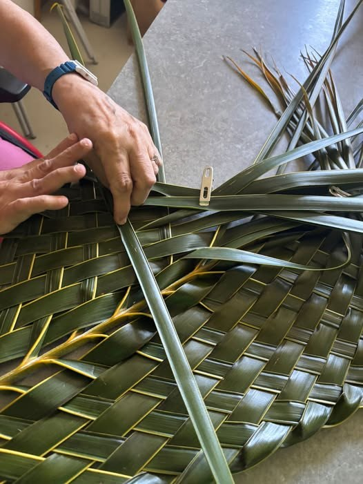

La tresseuse
« Le vacoa tressé, entre tradition et savoir-faire. »
Sabine tresse le vacoa et transmet ce savoir-faire partout où on l’invite : à l’atelier de Bras-Panon, dans les écoles, les associations, les structures d’accueil. Chaque pièce est faite en vacoa, avec parfois une touche de tissu.
Artisan QualitéAteliers petits & grandsPièces sur mesure